Awal cerita
Saat kita mulai saling mengenal, membuka cerita, dan belajar memahami satu sama lain.
For my favorite person
Satu ruang kecil berisi cerita, foto, doa, dan harapan yang akuuu simpan untuk sayanggg.
Buka pelan-pelan yaaa. Setiap halaman dibuat dengan penuh rasa sayang.
A letter from my heart
Baca pelan-pelan saat punya waktu tenang, yaa.
Haiii sayanggg 💕, gimana kabarr hari iniii? Semogaaa hari sayanggg dipenuhi hal-hal baik, hati yang tenang, dan banyak alasan kecil untuk tersenyum.
Akuii bersyukur bangett bisa mengenal sayanggg dan menjadi bagian dari cerita hidup sayanggg. Kehadiran sayanggg membuat banyak hal sederhana terasa lebih berarti. Kadang, percakapan singkat saja bisa membuat hari akuuu terasa jauh lebih hangat.
Terima kasihhh karena sudah berusaha bertahan, memahami akuuu, mendengarkan cerita akuuu, dan menunjukkan perhatian dengan cara sayanggg sendiri. Akuii tahu hubungan tidak selalu mudah. Ada hari yang penuh tawa, ada hari yang melelahkan, dan ada saat ketika kita belum sepenuhnya memahami perasaan satu sama lain.
Kalau akuuu pernah membuat sayanggg kecewa, merasa tidak dimengerti, atau lelah karena sikap akuuu, akuuu minta maaff yaaa. Akuii masih belajar menjadi pasangan yang lebih baik. Akuii ingin belajar mendengarkan lebih sabar, memahami tanpa terburu-buru membela diri, dan memperbaiki kesalahan melalui tindakan nyata.
Akuii ingin hubungan ini menjadi tempat kita bertumbuh, bukan tempat kita merasa takut untuk bercerita. Kalau sayanggg sedang capek, sedih, atau punya banyak pikiran, semogaaa sayanggg tetap punya ruang untuk beristirahat dan menjaga diri. Kita boleh saling mendukung tanpa membuat satu sama lain merasa terbebani.
Akuii ingin kita belajar meminta maaff dengan tulus, memaafkan dengan bijak, berbicara dengan lembut, dan menyelesaikan masalah tanpa saling merendahkan. Kita tidak harus selalu sepakat dalam segala hal, tetapi semogaaa kita selalu bisa saling menghormati.
Sejak tanggal 28 Agustus 2025, kita memulai cerita kita sendiri. Akuii berharap kita terus belajar menjadi lebih dewasa. Akuii tidak bisa menjanjikan bahwa setiap hari akan mudah, tetapi akuii ingin berusaha menghadapi hari-hari itu dengan kejujuran, kesabaran, dan kasih sayang yang sehat.
Akuii ingin melihat sayanggg mencapai cita-cita, bangga pada diri sendiri, dan tumbuh menjadi pribadi yang bahagia. Akuii juga ingin terus memperbaiki diri supaya menjadi seseorang yang lebih bertanggung jawab, bukan hanya lewat kata-kata manis, tetapi lewat sikap sehari-hari.
Akuii selalu berdoa semogaaa Allah membimbing kita menuju jalan yang baik. Kalau hubungan ini memang menjadi bagian dari takdir terbaik untuk kita, semogaaa suatu hari nanti kita bisa melangkah menuju pernikahan, membangun rumah tangga yang penuh kasih, dan saling menemani sampai usia kita bertambah tua.
Akuii tahu masa depan tidak bisa dipastikan hanya dengan keinginan. Karena itu, akuii ingin terus berusaha, berdoa, memperbaiki diri, dan menjaga hubungan ini dengan cara yang baik. Semogaaa Allah memudahkan jalan kita jika memang itu yang terbaik.
Terima kasih sudah hadir dalam cerita akuuu. Semogaaa sayanggg selalu dikelilingi kebaikan, diberi kesehatan, dimudahkan urusannya, dan punya banyak alasan untuk tersenyum. Apa pun yang terjadi, semogaaa kita tetap bisa saling memperlakukan dengan hormat dan tulus.
Dengan tulus dan penuh harapan,
akuuu yang selalu mendoakan kebaikan untuk sayanggg 🤍
Our little memories
17 potongan kenangan dengan kata-kata manis dan lucu.
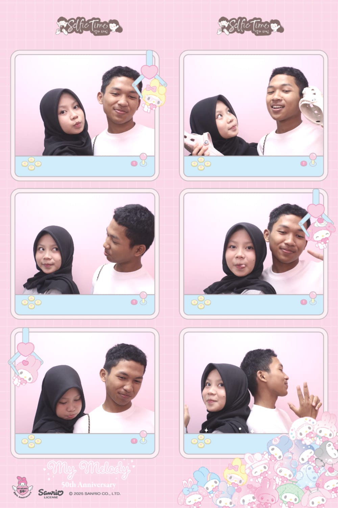
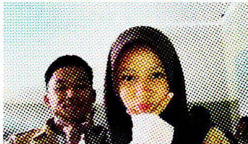
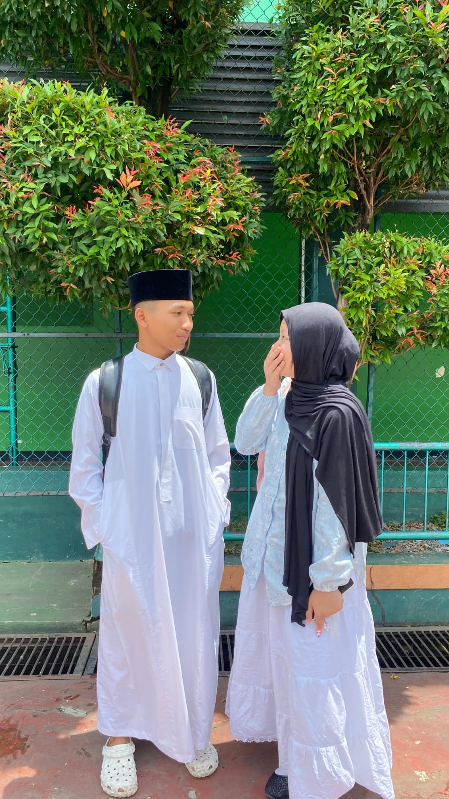
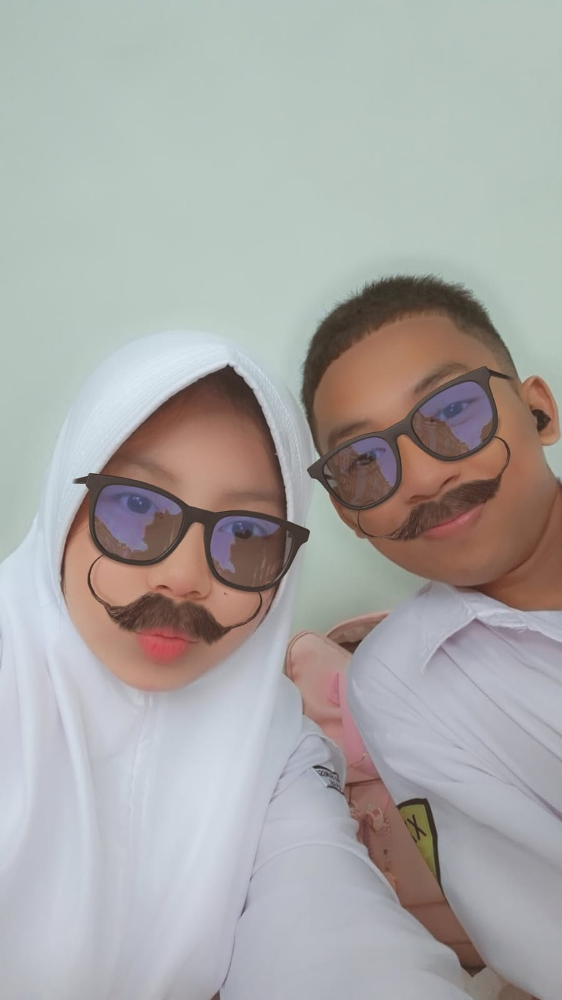
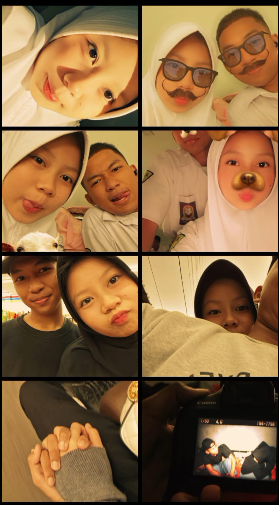
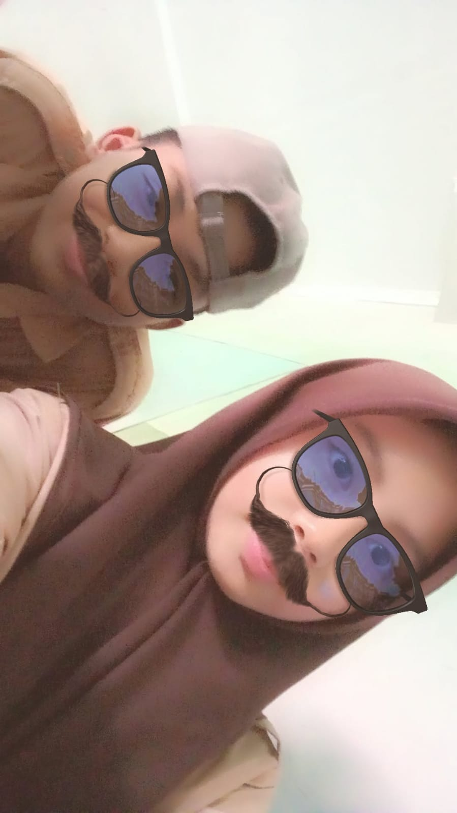
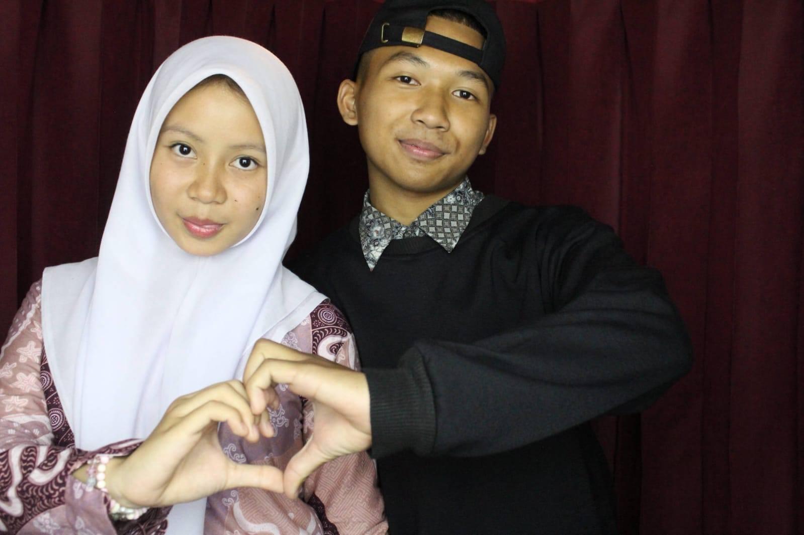
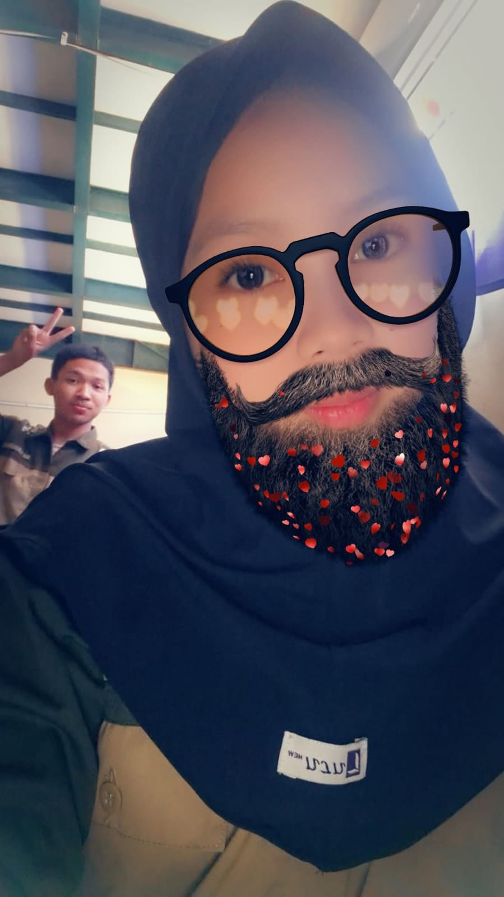
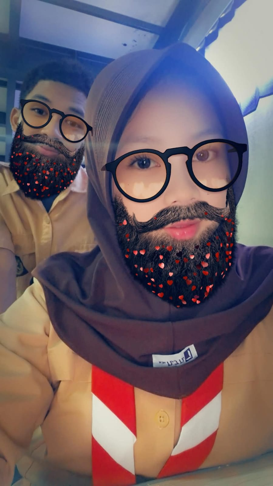
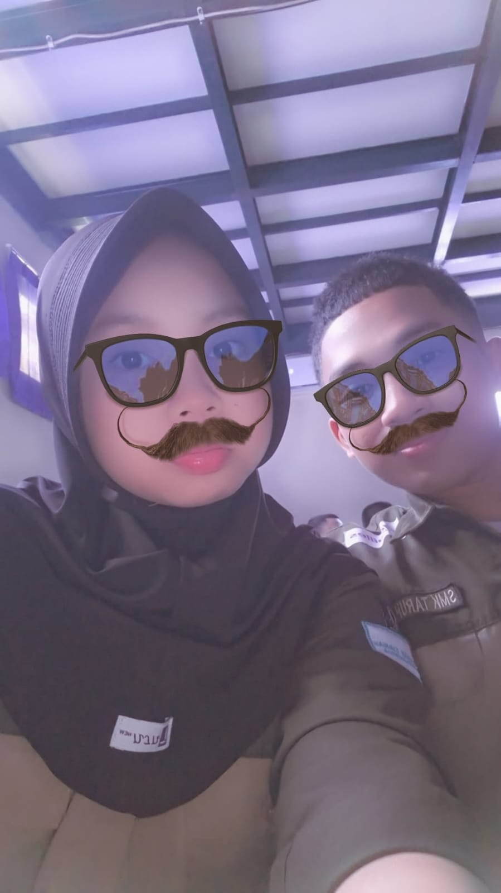
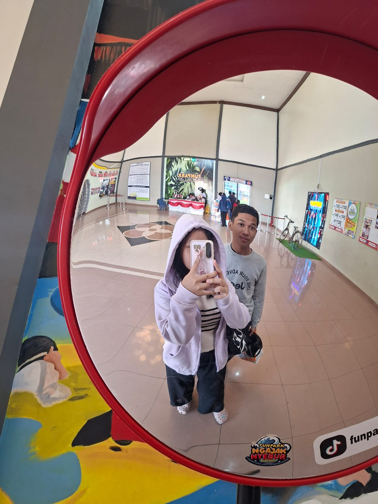
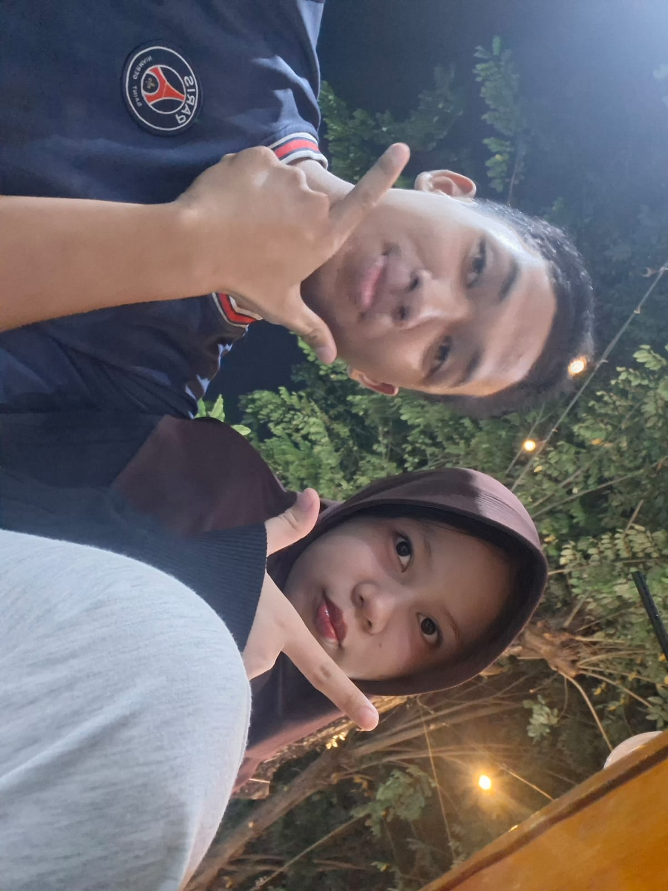
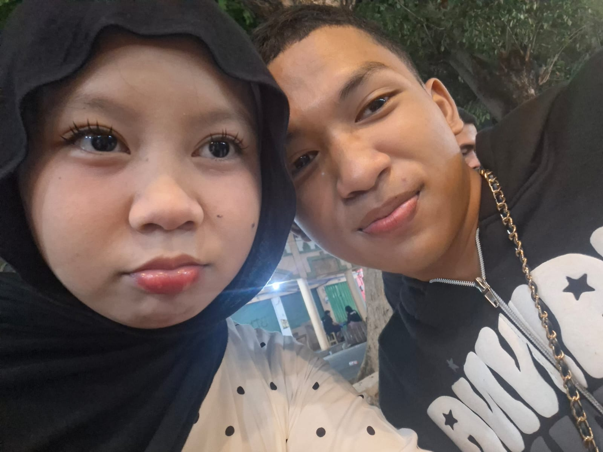
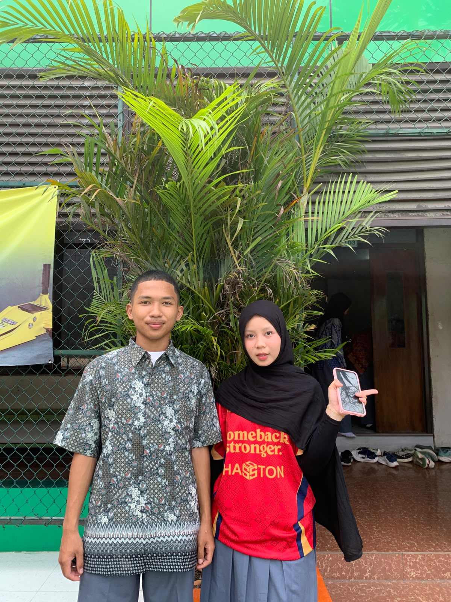
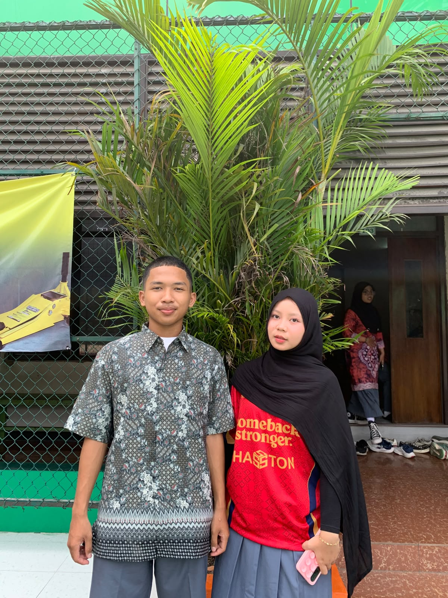
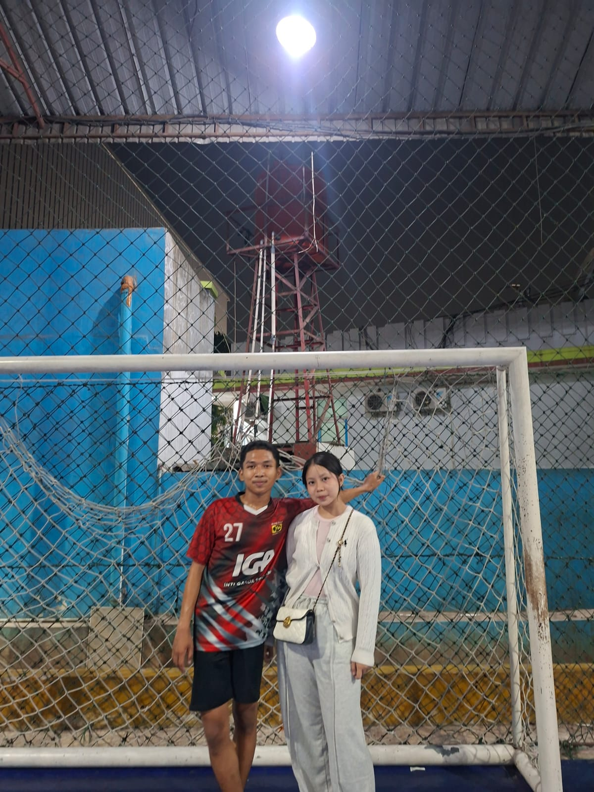
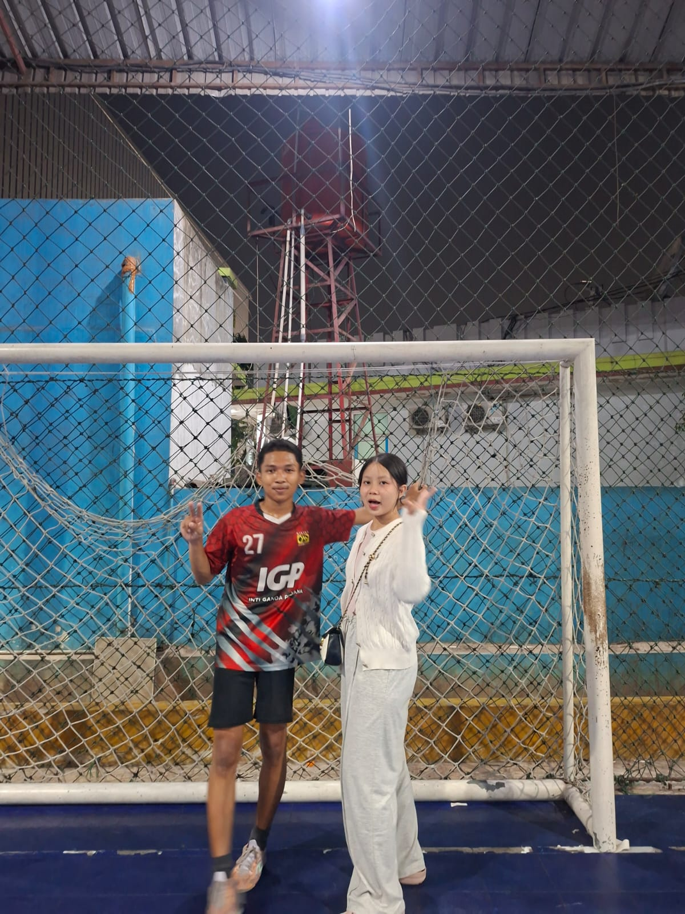
Little things matter
Cerita indah tidak selalu harus berupa kejadian besar.
Saat kita mulai saling mengenal, membuka cerita, dan belajar memahami satu sama lain.
Pesan singkat, candaan kecil, kabar tentang hari kita, dan perhatian yang membuat kita merasa diingat.
Ketika ada perbedaan, semogaaa kita belajar berbicara lebih baik, mengakui kesalahan, dan memperbaiki sikap.
Semogaaa kita terus bertumbuh, saling mendukung cita-cita, dan memilih jalan yang diridai Allah.
My little prayers
Semogaaa setiap harapan baik dibimbing menuju jalan terbaik.
Ya Allah, jagalah sayanggg dalam setiap langkahnya. Berikan kesehatan, ketenangan hati, kemudahan dalam belajar dan berusaha, serta kebahagiaan yang membawa kebaikan. Dekatkan sayanggg dengan orang-orang yang tulus.
Ya Allah, lembutkan hati kami ketika berbicara, tuntun kami saat berbeda pendapat, dan ajarkan kami saling menghargai. Berikan keberanian untuk meminta maaf dan kemauan memperbaiki kesalahan.
Ya Allah, jika hubungan ini baik bagi agama, kehidupan, dan masa depan kami, bimbinglah kami menuju jalan yang Engkau ridai. Jika Engkau mengizinkan, semogaaa kami bisa menikah dan membangun keluarga yang penuh kasih sayang serta tanggung jawab.
Ya Allah, berikan kami kesabaran saat menghadapi kesulitan, kebijaksanaan saat mengambil keputusan, dan ketenangan ketika keadaan tidak sesuai harapan.
Ya Allah, jadikan kami pribadi yang jujur, sabar, dewasa, dan bertanggung jawab. Bimbing kami agar tidak hanya menginginkan hubungan yang baik, tetapi juga mau berusaha menjadi orang yang baik.
Ya Allah, tuntunlah kami menerima ketetapan-Mu dengan hati lapang. Jika harapan kami baik, mudahkanlah jalannya. Jika ada yang perlu diperbaiki, tunjukkanlah agar kami dapat belajar dan bertumbuh.
A tiny love challenge
Jawab 5 pertanyaan seru dan lihat gelar romantismu!
Your result
One last little note
Sayanggg, semogaaa halaman kecil ini menjadi pengingat bahwa ada banyak hal baik yang patut disyukuri. Akuii ingin terus belajar menjadi pribadi yang lebih baik, mendukung cita-cita sayanggg, dan menjaga hubungan ini dengan cara yang sehat serta penuh hormat.
Akuii akan terus berdoa agar kita diberikan petunjuk untuk memilih jalan yang baik. Semogaaa, jika memang menjadi kebaikan bagi kita, suatu hari nanti kita dapat membangun masa depan bersama dengan penuh tanggung jawab.
With love, from akuuu untuk sayanggg ♡
Private little corner
Masukkan password untuk membuka QR Code.
Halaman khusus untuk pemilik hadiah ini.
Scan our little story
Pindai kode ini untuk membuka website kenangan kita.
QR Code membutuhkan internet untuk menampilkan gambar. Website harus sudah dipublikasikan agar bisa dibuka orang lain.